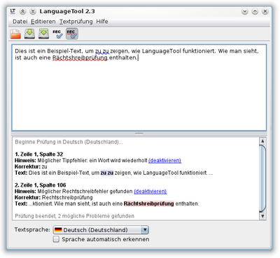

LanguageTool
Dieser Artikel wurde für die folgenden Ubuntu-Versionen getestet:
Ubuntu 16.04 Xenial Xerus
Ubuntu 14.04 Trusty Tahr
Zum Verständnis dieses Artikels sind folgende Seiten hilfreich:
Archive entpacken, optional
Dateirechte ändern, optional
Ein Terminal öffnen, optional
Anwendungen hinzufügen, optional
LanguageTool  ist eine freie Stil- und Grammatikprüfung, die neben Deutsch noch mehr als 25 weitere Sprachen
ist eine freie Stil- und Grammatikprüfung, die neben Deutsch noch mehr als 25 weitere Sprachen  unterstützt, darunter Englisch, Französisch, Spanisch und Chinesisch. LanguageTool ist sowohl als eigenständiges Programm als auch als Erweiterung für diverse Programme wie LibreOffice und Firefox verfügbar.
unterstützt, darunter Englisch, Französisch, Spanisch und Chinesisch. LanguageTool ist sowohl als eigenständiges Programm als auch als Erweiterung für diverse Programme wie LibreOffice und Firefox verfügbar.
Voraussetzungen¶
Zunächst ist sicherzustellen, dass eine Java-Laufzeitumgebung (JRE) in Version 8 installiert ist [1]. Diese ist bei der Verwendung der Erweiterungen für Firefox oder Thunderbird nicht zwingend notwendig.
LanguageTool als eigenständiges Programm¶
Installation¶
LanguageTool als eigenständiges Programm kann als Archivdatei von der Projektseite  heruntergeladen und entpackt [2] werden.
heruntergeladen und entpackt [2] werden.
Hinweis!
Fremdpakete können das System gefährden.
Um die grafische Oberfläche von LanguageTool zu starten, führt man die Datei languagetool.jar mit Java aus. Je nach Desktop-Umgebung muss die Datei zunächst ausführbar gemacht werden [3]. Anschließend kann die Programmdatei per Doppelklick oder über das Kontextmenü mit Java geöffnet werden. Alternativ kann auch der folgende Befehl [4] verwendet werden:
java -jar languagetool.jar

Verwendung von LanguageTool¶
Das Programmfenster ist in zwei Bereiche unterteilt:
Im oberen Bereich wird der zu prüfende Text eingegeben. In diesem werden – sofern die automatische Prüfung nicht deaktiviert wurde – Rechtschreibfehler rot und andere sprachliche Fehler (Grammatik, Stil, Wortwiederholung usw.) blau angestrichen. Wird LanguageTool in den Systemabschnitt verkleinert ("Datei → In den System Tray verkleinern“) und durch einen Klick auf das LT-Symbol wiederhergestellt, wird automatisch der Text geprüft, der sich zur Zeit in der Zwischenablage befindet (zum Kopieren in die Zwischenablage reicht es in der Regel, den Text zu markieren). Klickt man mit der  rechten Maustaste auf einen markierten Fehler, erhält man eine Fehlerbeschreibung und ggf. Korrekturvorschläge.
rechten Maustaste auf einen markierten Fehler, erhält man eine Fehlerbeschreibung und ggf. Korrekturvorschläge.
Im unteren Bereich wird ein ausführlicherer Prüfbericht angezeigt. Hier gibt es auch die Möglichkeit, einzelne Regeln zu deaktivieren und deaktivierte Regeln wieder zu aktivieren.
Einstellungen¶
Die Sprache des zu prüfenden Texts kann unten im Hauptfenster festgelegt werden. Des Weiteren kann auch das automatische Erkennen der Textsprache eingeschaltet werden; die Automatik funktioniert jedoch nur bei längeren Texten zuverlässig.
Unter „Textprüfung → Optionen…“ können einzelne Regeln für die aktuell ausgewählte Sprache aktiviert und deaktiviert werden. Außerdem kann hier eine Muttersprache eingestellt werden, welche für die Prüfung auf falsche Freunde in fremdsprachigen Texten notwendig ist. Weiterhin können hier Einstellungen für den LanguageTool-Server verändert werden.
Serverbetrieb¶
LanguageTool kann auch als Server betrieben werden, sodass andere Anwendungen (z. B. Erweiterungen für andere Programme) Text von LanguageTool prüfen lassen können, ohne einen externen Dienst im Internet kontaktieren zu müssen. In der grafischen Oberfläche kann der Server im Einstellungsdialog und über das Kontextmenü des LT-Symbols im Systemabschnitt (wenn LanguageTool dorthin minimiert worden ist) (de)aktiviert werden. Alternativ kann auch direkt die Datei languagetool-server.jar ausgeführt werden [4]:
java -cp languagetool-server.jar org.languagetool.server.HTTPServer
Wird der Server so gestartet, erscheint keine grafische Benutzeroberfläche.
Zum Testen des Servers kann man beispielsweise die Adresse http://localhost:8081/?language=de-DE&text=Das+ist+eine+Test. im Browser aufrufen. Dort sollte eine mit <matches beginnende Ausgabe erscheinen.
LanguageTool als Erweiterung¶
LanguageTool kann auch als Erweiterung in einer Vielzahl anderer Programme integriert werden. Die Nutzung von LanguageTool als Erweiterung ist üblicher als die Nutzung der LanguageTool-Benutzeroberfläche. Wenn nicht anders erwähnt, ist es für die Verwendung der Erweiterung nicht notwendig, die Stand-Alone-Version von LanguageTool herunterzuladen.
LibreOffice¶
Installation¶
Damit LanguageTool in LibreOffice verwendet werden kann, muss zusätzlich das Paket
libreoffice-java-common
 mit apturl
mit apturl
Paketliste zum Kopieren:
sudo apt-get install libreoffice-java-common
sudo aptitude install libreoffice-java-common
installiert [5] werden. Danach muss die gerade installierte Java-Version in LibreOffice unter "Extras → Optionen… → LibreOffice → Erweitert" ausgewählt werden. Anschließend lädt man die Installationsdatei der Erweiterung „für LibreOffice/OpenOffice“ von der Webseite des Projekts herunter. Durch das Öffnen der heruntergeladenen .oxt-Datei sollte der Installationsprozess in LibreOffice automatisch gestartet werden. Sollte dies nicht funktionieren, kann die heruntergeladene Datei auch innerhalb von LibreOffice unter "Extras → Extension Manager… → Hinzufügen …" ausgewählt werden. Zum Abschluss muss LibreOffice neu gestartet werden.
Verwendung¶
Ist die automatische Rechtschreib- und Grammatikprüfung aktiviert, werden die von LanguageTool gefundenen Fehler blau gekennzeichnet; die Rechtschreibprüfung findet weiterhin durch LibreOffice selbst statt, wobei LibreOffice dasselbe Wörterbuch wie LanguageTool (nämlich Hunspell) verwendet. Klickt man mit der rechten Maustaste auf ein markiertes Wort, erscheinen je nach Art des Fehlers folgende Menüeinträge:
eine kurze Beschreibung des Fehlers (z. B. Möglicher Tippfehler)
ein Eintrag "Erläuterungen …", der zu einer Webseite mit mehr Informationen über den gemachten Fehler führt
Korrekturvorschläge
der Eintrag "Rechtschreibung und Grammatik", der den von der Rechtschreibprüfung bekannten Prüfdialog öffnet, der eine ausführlichere Fehlerbeschreibung enthält
Einstellungen¶
Die Sprache der Grammatikprüfung richtet sich nach der eingestellten Dokumentsprache. Unter "Extras → LanguageTool → Konfiguration …" befindet sich der oben beschriebene Einstellungsdialog von LanguageTool. Die hier festgelegten Einstellungen sind unabhängig von den Einstellungen der Stand-Alone-Variante von LanguageTool.
Firefox¶
Die Erweiterung für Firefox kann von der offiziellen Add-on-Seite heruntergeladen werden. Nach der Installation ist kein Neustart erforderlich, allerdings kann nur Text in Seiten geprüft werden, die nach der Installation der Erweiterung geöffnet worden sind.
Die Textprüfung kann entweder von einem lokal laufenden LanguageTool-Server oder von einem Webdienst übernommen werden; findet die Erweiterung keinen lokalen Server, wird angeboten, den Webdienst zu benutzen. Die Einstellungen der Erweiterung können unter "Extras → Add-ons → Erweiterungen" geändert werden. Weitere Informationen enthält die Beschreibung der Erweiterung .
Thunderbird¶
Für Thunderbird steht die Erweiterung Grammar Checker zur Verfügung. Nach der Installation muss Thunderbird neu gestartet werden. In den Einstellungen der Erweiterung sollte als Primary server http://localhost:8081 (die Adresse des lokalen Servers) und als Secondary server wenn gewünscht https://languagetool.org:8081 (die Adresse des offiziellen LanguageTool-Onlinedienstes mit verschlüsselter Übertragung) eingetragen sein.
Beim Verfassen von E-Mails kann die Grammatikprüfung über "Extras → Grammar" gestartet werden; die Prüfungsergebnisse erscheinen im unteren Teil des Fensters.
Weitere¶
Weitere Erweiterungen (u. a. für Emacs, LyX, VIM) sind auf der LanguageTool-Webseite verlinkt.
Problembehebung¶
Eine Liste von möglichen Problemen und ihrer Lösung findet man auf der Projektseite .
Links¶
LanguageTool – Freie Stil- und Grammatikprüfung
(freiesMagazin 08/2012)Rechtschreibkorrektur
 Übersichtsartikel
Übersichtsartikel
- Erstellt mit Inyoka
-
 2004 – 2017 ubuntuusers.de • Einige Rechte vorbehalten
2004 – 2017 ubuntuusers.de • Einige Rechte vorbehalten
Lizenz • Kontakt • Datenschutz • Impressum • Serverstatus -
Serverhousing gespendet von